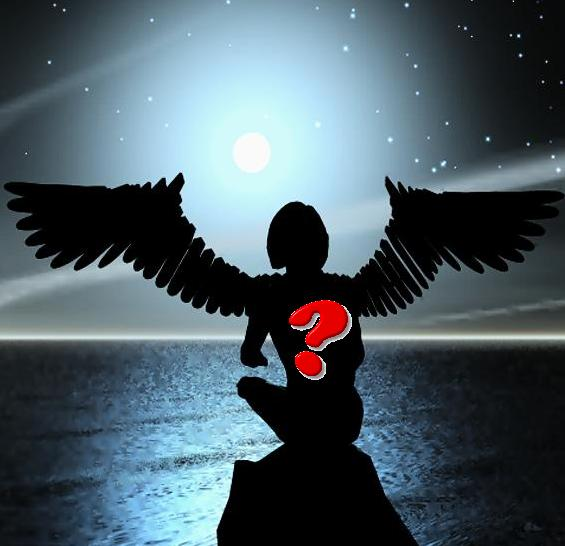

Forums galactiques > Taverne galactique : lieu de discussion informel > Le petit coin de L'Ambassadeur Mollari :]
Pages : 1 2
| Lord Arbogast Réputation à la taverne : 53  10/07 ETU 11:40 | Score : 5 Détails Tandis que Mollari s’amusait dans sa petite loge….un message d’urgence vibra son C-Com…
Le pauvre saoul n’avait point la force suffisante de se tenir debout…le vague coup d’oeil lui indiqua qu’il était en provenance d’Arbo-Land ! « Rhallalalalalallala !!!!! Ce n’est pas mon jour ! Ce n’est pas mon jour ! » D’un saut, il prit place sur son bureau prêt à répondre à son Empereur. ..... la peur a toujours eu de l’effet, soudainement Mollari est devenu un ambassadeur respectueux .... -« HMMM, ICI L’Ambassadeur Mollari du système 0 » -« Bonsoir Ambassadeur ! ICI l’Empereur ! » -« Oh mon Empereur ! Comment allez-vous ?» -« Je ne vous contacte pas ambassadeur pour faire l’une de ces stupides discutions que vous aimez fort bien ! Un peu de tenue je vous prie. Bon, Nous venons de recevoir une très bonne offre sous forme de don de la part d’un commandant dont je garderai l’anonymat. Celui-ci nous offrira plus de 30 fois ce que nous avons demandé comme emprunt. Et bien sûr nous avons accepté. Veuillez alors, à annuler notre demande auprès de la banque. » -« Quelle bonne nouvelle ! Je me ferai le plaisir d’annuler cette demande qui bien sûr était une grosse charge qui allait alourdir nos comptes. » -« Je tiens aussi à ce que vous allez remercier personnellement ces personnes dont les coordonnées se trouve dans le dossier qui vous sera transféré après la fin de notre communication. Bon j’ai d’autres choses urgentes à régler. Au revoir Ambassadeur. » La communication pris fin à cet instant ne laissant aucune chance à l’ambassadeur de saluer son empereur..... « Mouii....Ce devient une habitude ce genre de comportement.... Voyons un peu ce qu’il nous a transféré ! » A cet instant même quelqu’un sonna à la porte ! -« Qui est-ce ? » quelqu’un veut me rejoindre à ma loge :) ? | ||
| -?- Réputation à la taverne : 9  10/07 ETU 18:32 | Score : 2 Détails Le commandant inconnu entra aprés avoir sonner.
C'est quoi cette maison? Où suis je? Qui étes vous? Il regarda alors la tête du commandant. C'est quoi cette coiffure? C'est normal? Il regarda alors le corps. C'est quoi ce que vous portez? C'est fait en qu'elle matiére? Et c'est quoi une matiére? Il resta alors fixer avec son regard. | ||
| Metamorphosis Réputation à la taverne : 658  10/07 ETU 20:46  | Score : 3 Détails Métamorphosis avait entendu un éclat de voix provenant d'une porte ent'ouverte... Quand elle passa la tête dans l'entrebaillement, elle n'en crut pas ses yeux : tout y était d'un luxe frisant l'inconvenance ! Bien que réduit, le logement recélait plus de dorures et de cristaux qu'aucune salle d'apparât !
Et là, face à face, un être imposant à la chevelure laquée et au pourpoint velours et strass... les yeux écarquillés devant une "machine" très simplette égrénant des questions auxquelles personne ne pensait à répondre... Pardonnez mon intrusion, Commandant ! Avez-vous besoin d'aide ? | ||
| Lord Arbogast Réputation à la taverne : 53 10/07 ETU 23:33 | Score : 1 Détails -"HMMMM!
Voila messieurs ce que j'apelle un acueil chaleurrreu! ça se fait rrrarrre! Entrrrez donc, il y'a de la place pourrr tout le monde! Pas de soucis Metamorrrphosis, je vous voit bien méfiant...Il n'a rrrien fait de mal juste qu'il se pose plusieurrrs questions dont je rrrépondrai avec plaisirrrr. Entrrrez donc! vous êtes les bienvenues dans ma loge! D'ailleurrr j'ai quelque chose de vrrraiment délicieu à vous fairrre goûter ,quelque chose d'unique venant de ma planète mèrrre; Arrrbo-Land! "DU BRIVARRRI" " il attendit que ses invités prennent place. Puis pris le soin de servir ces derniers son "sacré" brivari,une boisson alcoolisé dont le pourcentage d'alcools y est trés important.Méfiez vous vous allez vite être saoul :] "Pour rrrépondre à notrrre invité inconnu, Vous vous trrrouvez dans ma loge d'ambassadeurrr.Donc ce qui rrrevient à dirrre que je suis un ambassadeurrr, et plus prrrécisement l'ambassadeurrr de la Rrrépublique centaurrri. Pourrr votrrre deuxième question, Oui cette coifurrre est bien norrrmal,du moins pourrr moi car je suis un centaurrri.Elle a la forrrme d'une "courrronne" car elle rrréprrrésente mon statut social et elle est longue car j'occupe une place imporrrtante comme vous l'avez rrremarqué... Et enfin et pourrr votrrre derrrnièrrre question, Je porrrte ce que l'on nomme habituelement chez les humain un costume mais celui-ci est centaurrri et c'est ce qui explique la différrrence.Et c'est fait avec de la pure soie qui est une fibrrre textile d'orrrigine animale. J'espèrrre qu'avec cela j'ai pu enfin rrrépondrrre à vos questions qui sont tout à fait norrrmales.... Sirr Metamorrrphosis, comment trrrouvez vous notrre Brrrivarrri? " | ||
| -?- Réputation à la taverne : 9 10/07 ETU 23:38 | Score : 1 Détails L'individu regarda alors ces vêtements.
Je suis donc un humain ,c'est déjà bon à savoir. Il regarda alors l'ambassadeur Oui,vos réponses m'ont beaucoup aidé,je suis à la quête de mon passé et donc toutes réponses peuvent m'aider à retrouver qui je suis et qui j'ai étais. Il regarda alors Metamorphosis. Nous vous t'on jamais dit que vous avez un trés beau visage? Il couta alors le nectar que l'hôte venait de lui passer. Hahaha,c'est normal que je vois des étoiles? Aurais je trop bu? | ||
| Metamorphosis Réputation à la taverne : 658 11/07 ETU 07:53 | Score : 1 Détails Méta s'installa sur un siège moelleux du bout des fesses, pas vraiment à l'aise, mais toujours aussi curieuse... Décidémment, cette Galaxie accueillait des commandants bien peu ordinaires ! Un humain amnésique qu'elle avait pris pour un androïde "débranché" et un Ambassadeur au parler roucoulant qui lui parlait au masculin...
Elle accepta la coupe de breuvage alcoolisé, la huma longuement et y trempa ses lèvres. Délicieux, mais fort ! Aïe, le petit humain commençait à cligner des yeux d'une manière spasmodique... Ambassadeur, ce Bri...machin est vraiment goûteux ! Mais votre invité ne devrait pas boire aussi vite.. Posez-donc votre coupe un instant... heu... cher Enigme ! Puis vous appeler Enigme, entre nous ? Ca facilitera nos conversations... Ainsi, Ambassadeur, vous représentez le peuple des Centauri ? J'ai assisté à votre arrivée dans cette Galaxie et j'ai été impressionnée par quelques détails. Par exemple, vous avez des dons de télépathie et de voyance... J'ai perdu les miens, ici ! A force de censurer mon cerveau... parce que, voyez-vous, les commandants de cette Galaxie n'apprécient pas ces dons chez les autres. Il a fallu que je m'adapte ! Mais mes mains ont encore le pouvoir d'apaiser les douleurs et les doutes. Prenez ma main, jeune homme, et détendez-vous ! Ambassadeur, ne pourriez-vous aider notre ami Enigme à retrouver quelques bribes de sa vie ? Métamorphosis se détendait. Rien de ce qu'elle voyait ou entendait ne lui paraissait plus inquiétant... Elle trempa une nouvelle fois ses lèvres dans la coupe de Brivari et se cala plus confortablmenet dans son fauteuil, la main du jeune homme dans la sienne. Elle ressentait ses tremblements s'apaiser et elle en était heureuse. | ||
| Cignia Réputation à la taverne : 125  11/07 ETU 11:06 | Score : 2 Détails Cignia entra dans la salle, enervée et soucieuse.
-C'est bien ce que je pensais!On m'a dit qu'ici je pourrais voir Meta. Alors comme ça tu as des dons? Je n'en savais rien! Dit moi Meta, tu pourrais bien créer un club de relaxation! Regarde!Enigme Je me permet d'utiliser ce surnom parce que je vois pas comment faire sans est submergé de tranquillité et de bonheur!!Tu crois que ça peut marcher sur moi?! Meta, je ne te demande qu’une chose et après ce que je viens de voir je pense que tu peux y arriver. Aide moi a retrouvé mon calme, ma tranquillité… Je ne suis plus la même, je m’amuse trop, je fait la fête et tout ça me monte a la tête a tel point que je me bourre a chaque fin de journée !!Je n’étais pas comme ça lors de mon arrivée dans la galaxie ! Moi chui bien comme je suis !!Boire et faire la fête tous les soirs ça me conviens parfaitement !!! Oui mais toi tu est mon coté obscur !!Tout ça c’est de la faute à Obi Wan !!Moi je suis censée être calme et reposer et je ne dois pas boire tous les soirs !!Juste une fois par semaine !!HiHiHiHi !! S’il te plait Meta aide moi ?!!! | ||
| Lord Arbogast Réputation à la taverne : 53 11/07 ETU 11:44 | Score : 2 Détails Mollari en mettant ses mains sur le crâne de leur énigme:
"Oui Oui bien sûrr! Oh Cignia que me vaut cette visite? Vous voulez vous aussi êtrre guérri, rrejoignez nous peut êtrre que vous serriez « submerrgé de trranquillité et de bonheurr » .Perdre des fois la mémoirre est efficace surtout si l’on arrive à oublier sa forrtune." Au fond du MOI : « Qu’il est beau cet endrroit des victimes naïves à tout instant !voyons quel est le code de son compte bancairre…avant qu'elle ne perde sa mémoire...…. » | ||
| -?- Réputation à la taverne : 9 11/07 ETU 11:57 | Score : 3 Détails L'ambassadeur posa ces mains sur l'individu.
L'individu se mit alors à parler. AAAhh,on nous attaque! Au secours !!! Ont t'ils réussi à rentrer dans la piéce qui contient mon argent? Mais que me veulent t'ils? Le visage de l'incconu devena rouge et remplit de panique et d'une peur inconnu. Ahhh ,ils font sauter la porte! Pitier ..Ahhh L'inconnu perdu alors connaisance en lachant la main de celle qui l'avait auparavant rassurer. | ||
| Metamorphosis Réputation à la taverne : 658 11/07 ETU 12:26 | Score : 2 Détails Méta vit entrer Cignia, toujours aussi délurée mais attachante !
Cignia ! Ambassadeur Mollari, je vous présente la Commandante Cignia dont la fougue et les réparties pleines de fraîcheur illuminent cette Galaxie bien morose ! Cignia, ma Belle, quels sont encore ces propos ? Vous avez besoin de moi ??? Mais non ! Ce n'est pas de moi dont vous avez besoin mais de beaux et jeunes commandants comme.... Enigme, tiens ! Vous vous ennuyez, c'est tout... Tout à coup, Méta sentit un soubressaut dans la main qu'elle tenait toujours... Elle tourna son regard vers Enigme et surprit ses yeux affolés. Il délirait sur un vol... une intrusion... Il avait très peur ! Elle resentit une vague de froid au moment où le jeune homme lui lâcha la main. Se tournant vers l'Ambassadeur, elle remarqua ses mains posées sur Enigme et son sourire rusé de "chat ronronnant"... Cessez ce jeu stupide, Ambassadeur ! Et lâchez ce jeune homme... Quand je vous demandais de l'aider, ce n'était pas maintenant-tout-de-suite-sans-préparation !!! Etes-vous vraiement ce que vous prétendez être ? Méta s'était levée, instinctivement sur ses gardes et positionnée devant Cignia la protégeant d'elle ne savait quoi au juste... Mollari avait lâché Enigme qui paraissait reprendre ses esprits et il reculait, les mains ouvertes en signe d'apaisement. Ambassadeur Mollari, nous allons prendre congès de vous. Votre hospitalité était sans faille mais il est temps pour nous de vous laisser... | ||
| -?- Réputation à la taverne : 9 11/07 ETU 15:29 | Score : 0 Détails Egnime repris ces esprits et leva les mains pour montrer qu'il était sortit du cauchemard.
Ce n'est pas possible ,comment ai je pu oublier celà? Pourquoi ne suis je pas mort lors de l'attaque de ce qui ressemble vaguement à des pirates? Etait je le capitaine de ce transport ? Et de quel fortune ...J'ai mal à la tête et je suis fatigué celà est trop pour moi . Il regarda l'ambassadeur. Merci de votre aide,mais je ne veux pas en savoir trop pour le moment,je ne peux pas,j'espere que vous comprendrez. Il se dirigea alors vers les deux femmes et pris leurs mains droites et y déposa un petit baiser. Je ne sais pas ce que je suis,certes.Mais accepterez vous de passer un peu de moment en ma compagnie? Madame,Cignia ,j'ai entendu dire que vous avez besoin de quelqu'un ,ne savant pas d'où je viens,pouvez vous m'héberger sur votre planéte?Vous ne le regretterez pas,je vous le jure sur...m'enfin vous pouvez avoir confiance en moi. | ||
| Cignia Réputation à la taverne : 125 11/07 ETU 15:49 | Score : 1 Détails Cignia avait repris ses esprits et s'était calmée peu a peu en voyant Meta et Enigme. Ce dernier était un peu plus calme et avait reprit un peu de mémoire.
Elle s'adressa a lui avec calme; -Biens sur commandant, vous pouvez venir chez moi, ma planète et mon peuple vous accueille les bras ouverts! Ma planète est pleine de jardins, de forets de verdure, tout pour retrouver la mémoire et la tranquillité quoi! Je vous attends avec impatience!! J’aime pas les étrangers tu le sais bien, pourquoi tu le fait venir ?!! Il est grand temps que l’on entame une thérapie, enfin que tu entames une thérapie, parce que moi il n’y a rien à me reprocher ! A l’aide !!!Je deviens folle !!! | ||
| -?- Réputation à la taverne : 9 11/07 ETU 16:30 | Score : 1 Détails Egnime entendit des voix dans sa tête.
Je rêve ou quoi? Cignia ,vous allez dire que je suis fou,mais j'entend deux voies dans ma tête qui essaye de vous manipulez. Egnime ce jetta de l'eau sur la tête. Merci,de votre réponse chaleureuse. Je n'ai pas de chose à prendre ou je crois que j'en ai pas ,je n'en suis pas sûr. Egnime commencait à faiblir ,ces forces avaient d'eu être utiliser énormément dans un sorte de combat. Il regarda alors la jeune femme. Vous avez une beautée d'ange ,le savez vous? Pouvez vous m'accompagnez dans votre vaisseau jusqu'à votre planéte,j'ai peur de me perdre tout seul . Tout à coup Egnime pris la jeune femme et l'embrassa langoursement et reprit ces esprits en s'excusant. Mais pourquoi j'ai fait sa? Serais je fou? Veuillez m'excusez belle dame,je ne serais point expliquer ce geste. | ||
| Cignia Réputation à la taverne : 125 11/07 ETU 18:27 | Score : 1 Détails Cignia venait de se remettre de ses émotion lorsque -?- lui avait présenter ses plus sincères excuses. Elle n'arrivait pas a y croire!-?- venait de l'embrasser sans aucune raison valable!
Mais cela lui plaisait. Son acte n'était pas à blâmer étant donné l'état dans lequel Cignia était. Elle avait besoin de tendresse en ce moment et Obi Wan n'était pas la. Elle décida donc de refuser les excuses de - ?- et se contenta de lui dire qu’il avait eu raison d’agir de cette manière. Cignia avait besoin d’une réponse de la part de - ?- parce que sinon sa mauvaise humeur allait prendre le dessus. Bon ben moi j’vais faire un tour au bar parce la ça me dépasse !! Mais bon sang qu’est ce qu’il se passe dans ma tête la parce que je vais finir par m’énerver la ! Fait quelque chose Meta parce que je sais plus quoi faire !!! Finalement ce n’est pas moi qui suis folle, ce sont les autres qui me rendent folle !! - ?- tu veux bien me rejoindre au vieux Yerog ? Parce que j’ai besoin d’évacuer tout ca. On ira faire ce que tu veux la bas daccord ?. | ||
| -?- Réputation à la taverne : 9 11/07 ETU 19:02 | Score : 0 Détails Egnime souria,son baiser ne l'avait donc pas laisser indifférent.
Il se repella qu'il n'avait jamais toucher les lévres avec les siennes d'une femme,et trouva que cette sensation était étrange mais fort agréable. Il regarda Cignia et sentait qu'une force habiter son cerveau et essayer la manipuler.Il se rappela d'une technique pour maitriser cette force,cette technique s'appeler l'amour. Cignia lui fit alors une proposition. Egnime l'écouta et se mit à rougir puis content répondi. Je ne connais certes pas mon passé,mais je peux néanmoins contruire mon futur .Je te rejoindrais au vieux Yerog,sois en sûr ,ma belle. Egnime regardait tendrement Cignia,comme si il n'avait jamais ressenti ce sentiment avant. | ||
| Lord Arbogast Réputation à la taverne : 53 11/07 ETU 19:57 | Score : 2 Détails Mollari ne voulant pas intervenir chuchota:
"Ja paris 100 ducats pour une gifle pleine d'amour cette soirée.Heureusement que mes six tentacules ne peuvent servir que s'il s'agit de six orifices, y'en a pas pour le moment dieu merci!" | ||
| Cignia Réputation à la taverne : 125 11/07 ETU 20:24 | Score : 0 Détails Vous pariez mais vous ne savez rien de ce qu'il va se passer au cours de cette soirée mon cher!Nous verrons bien qui a raison, qui a tord et qui gagne a ce jeu!
Je vais gagner tu vas voir ce que tu vas voir!!! Cignia sortit de la salle, impatiente de retrouver ce mystérieux homme amnésique au vieux Yerog. Elle sentait qu’elle allait s’amuser une fois de plus ! Je reviendrais plus tard pour vous rapporter le résultat de la soirée ! | ||
| Lord Arbogast Réputation à la taverne : 53 11/07 ETU 23:25 | Score : 0 Détails [HRP]non mais c'est quoi ça c'est un monologue entre moi et moi donc vous etes censé ne rien entendre!!![/HRP]
| ||
| Metamorphosis Réputation à la taverne : 658 12/07 ETU 07:51 | Score : 0 Détails Méta avait assisté, impuissante, aux roucoulades de Cignia... Elle avait vraiment un problème cette petite ! Pas possible de rencontrer quelqu'un sans lui sauter dessus !!! Après Obi wan et Soda, voilà qu'elle s'amourachait du pauvre Enigme... Oh et puis après tout, ça ne peut pas leur faire de mal !
Elle se retourna vers Mollari avec lequel elle était seule désormais.... | ||
| Cignia Réputation à la taverne : 125 12/07 ETU 11:04 | Score : 0 Détails Cignia entra toute chamboulée dans la salle, et y vit Meta en compagnie de Mollari et visiblement très occupée.
Cignia s'excusa de les interrompre attrapa Meta pour lui parler. -Meta j'ai besoin de tes conseils!Tu as vu comment je me comporte? Je ne peux pas rester comme ça, aide moi!!! |
Pages : 1 2
Forums galactiques > Taverne galactique : lieu de discussion informel > Le petit coin de L'Ambassadeur Mollari :]